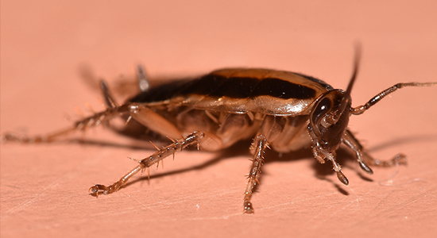
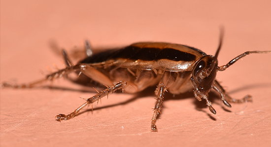
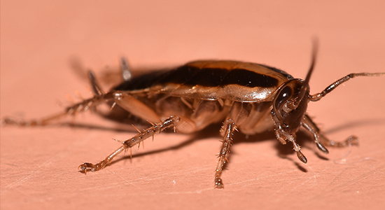

A CHAMELEON'S DIET
Feeder Insects and Gut Loading
Feeder insects are the insects bought by keepers which are then gut loaded with nutrients so
that they can then be fed to the animal the prey is intended for.
When a feeder insect - these can range from crickets, roaches, locusts, mealworms,
and any other insects your pet may eat - is purschased, it is then in
the keeper's best interest to begin gut loading the insect. Gut loading is the process when
the keeper gives the feeder insect(s) a highly nutritious diet with the
intent of such nutrients being passed onto the animal that is eating them.
Feeder insects can be fed a variety of things as long as such things are healthy for
the animal that will be eating them such as lettuce, tomato, cucumber,
and other options depending what suits your pet best and what nutrients it needs most.

Crickets are the most nutritious and cost-effective meal on the market.
Loscusts are very nutritious and are easy to find but aren't usually as cheap as
crickets as they are a bigger meal and are a more colourful and fancy alternative to crickets.
They are recommended for sub-adults and/or adults to ensure the chameleon
is big enough to easily take them.
They are a good choice for keepers who want to watch their chameleon eat
as they are easy for the chameleon to spot and hunt down in the enclosure.
Mealworms
Cockroach